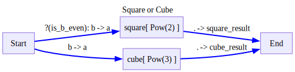
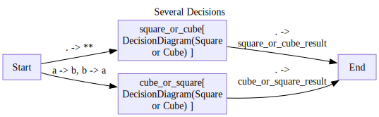
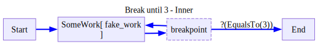
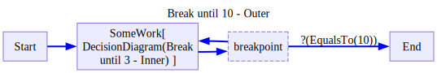
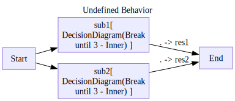

from ladle.diagrams import (
Define,
V,
E,
)
from ladle.std import ConditionNested Diagrams
def add(a,b):
return a+b
class Pow():
def __init__(self,power):
self.power = power
def __call__(self,a):
return a**self.power
def __str__(self):
return f'Pow({self.power})'
is_even = lambda x: x%2==0To allow compositionality, a node can take a Diagram Schema object instead of a function. Here is an example:
with Define('Square or Cube',type='decision',direction='LR') as SquareOrCube:
V('square',Pow(2),inputs=[
('Start(a=b)',Condition(is_even,mapping='x=b',name='is_b_even')),
],
outputs=['End(square_result=.)'])
V('cube',Pow(3),inputs=['Start(a=b)'],outputs=['End(cube_result=.)'])
with Define('Several Decisions',type='flow',direction='LR') as SeveralDecisions:
V('square_or_cube',SquareOrCube,inputs=['Start(**)'],outputs=['End(square_or_cube_result=.)'])
V('cube_or_square',SquareOrCube,inputs=['Start(b=a,a=b)'],outputs=['End(cube_or_square_result=.)'])
d=SeveralDecisions()
for trace in d.run({'a':3,'b':2}):
trace.pprint(skip_passthrough=True)
d.outputNode cube_or_square.cube:
{'input': {'a': 3}, 'output': 27}
================================================================================
Node square_or_cube.square:
{'input': {'a': 2}, 'output': 4}
================================================================================
Node cube_or_square:
{'input': {'a': 2, 'b': 3}, 'output': {'cube_result': 27}}
================================================================================
Node square_or_cube:
{'input': {'a': 3, 'b': 2}, 'output': {'square_result': 4}}
================================================================================{'cube_or_square_result': {'cube_result': 27},
'square_or_cube_result': {'square_result': 4}}Note that traces of subdiagrams are also returned to you when running the main diagram. Their trace are namespaced with the name of the node that the subdiagram resides in.
All diagram types can be nested in all diagram types as deep as you want you can even react to breakpoints inside sub diagrams:
class EqualsTo:
def __init__(self,value):
self.value = value
def __call__(self,x):
return x==self.value
def __str__(self):
return f'EqualsTo({self.value})'
def fake_work(x):
return x
with Define('Break until 3 - Inner',type='decision',direction='LR') as InnerBreak:
V('SomeWork',fake_work,inputs=['Start'],
outputs=['breakpoint']
)
V('breakpoint',is_break=True,outputs=[
'SomeWork',
('End',EqualsTo(3)),
])
with Define('Break until 10 - Outer',type='decision',direction='LR') as OuterBreak:
V('SomeWork',InnerBreak,inputs=['Start'],
outputs=['breakpoint']
)
V('breakpoint',is_break=True,outputs=[
'SomeWork',
('End',EqualsTo(10)),
])

d = OuterBreak()
inputs = [
0, # will stay in subdiagram until 3
1,
2,
3, # will exit subdiagram
5, # enter subdiagram again
10, # stay in subdiagram since its waiting for 3
3, # will exit subdiagram
10, # will exit diagram
100 # will not be touched
]
while True:
input = inputs.pop(0)
for trace in d.run(input):
# trace.pprint()
pass
if d.finished:
break
inputs,d.output([100], 10)There is only one caveat:
- Decision diagrams with breakpoints, cant be nested inside flow diagrams.
import pytest
with pytest.raises(ValueError) as exeinfo:
with Define('Undefined Behavior',direction='LR') as Schema:
V('sub1',InnerBreak,inputs=['Start'],outputs=['End(res1=.)'])
V('sub2',InnerBreak,inputs=['Start'],outputs=['End(res2=.)'])
exeinfo